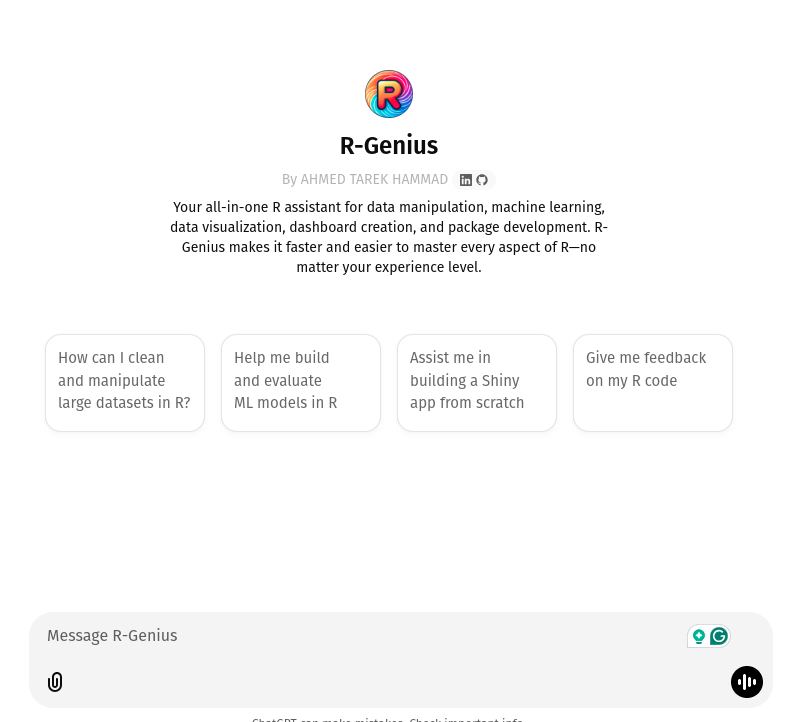
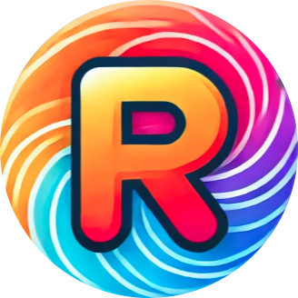

How I Created R-Genius: A Journey into Empowering R Users with AI
The idea of R-Genius was born out of a simple realization: while R is one of the most powerful tools in data science, it can be incredibly daunting, even for seasoned practitioners. I’ve spent years using R to analyze data, build models, create visualizations, and develop applications. Along the way, I’ve faced every challenge R has to offer—from cryptic error messages and complex package ecosystems to the never-ending search for the “right” function or library.
As someone who has grown to love the language and its capabilities, I wanted to create something that could make the journey smoother for others. Whether you’re just starting out with R or you’re an expert pushing the boundaries of its capabilities, I envisioned a tool that could act as your trusted assistant, streamlining workflows, solving problems, and even inspiring creativity. That vision became R-Genius.

The Inspiration Behind R-Genius
Every R user has experienced moments of frustration: spending hours debugging a snippet of code, struggling to build a Shiny app, or feeling overwhelmed by the sheer number of packages available for any given task. These moments don’t just slow us down—they pull us away from the aspects of data work that we truly enjoy: uncovering insights, telling stories, and building solutions.
I wanted to tackle this frustration head-on by creating a tool that provides immediate, intelligent assistance. Imagine having a virtual colleague who knows the ins and outs of R, someone who can answer your questions, suggest solutions, and guide you through even the most complex challenges. That’s the essence of R-Genius.
Bringing R-Genius to Life
Creating R-Genius was both a technical challenge and a deeply personal journey. I started by reflecting on my own experiences with R and identifying the pain points that slow people down the most. Whether it was struggling to clean messy data, mastering the intricacies of machine learning packages, or building interactive dashboards, I wanted R-Genius to address these hurdles with clarity and precision.
The next step was to teach R-Genius everything I knew. Drawing on my background in statistics, machine learning, and programming, I worked to ensure that the tool could handle a wide range of tasks. I fed it knowledge about foundational packages like dplyr and ggplot2, advanced tools like caret and tidymodels, and niche libraries for specialized tasks like time series analysis or econometrics. I didn’t just want R-Genius to provide answers—I wanted it to explain solutions in a way that users could understand and learn from.
Finally, I focused on making R-Genius intuitive to use. I envisioned it as a conversational assistant, capable of adapting to your needs in real-time. If you’re stuck on an error, it can help you debug your code. If you need inspiration, it can suggest ways to visualize your data or structure your analysis. If you’re trying something new, like building a Shiny app, R-Genius can guide you step-by-step. It’s not just a tool—it’s a companion for your data journey.

How R-Genius Makes R More Accessible
One of my main goals for R-Genius was to make R less intimidating for beginners while still offering value to experienced users. For those new to R, it simplifies the learning process by providing clear explanations and actionable advice. Instead of sifting through dense documentation or trying to decipher error messages, you can ask R-Genius for help and get an immediate, understandable response.
For advanced users, R-Genius acts as a productivity booster. It’s like having an encyclopedia of R knowledge at your fingertips, combined with the ability to tailor solutions to your specific use case. Need to optimize a machine learning model? R-Genius can walk you through the process, from feature engineering to hyperparameter tuning. Working on a complex data visualization? R-Genius can suggest creative ways to tell your story, complete with code snippets and examples.
What truly sets R-Genius apart is its adaptability. It doesn’t just give generic advice—it understands your goals and provides solutions that are relevant to your project. Whether you’re cleaning messy data, forecasting sales with time series models, or building a dashboard to share insights with stakeholders, R-Genius adjusts to your needs and helps you move forward with confidence.
What R-Genius Can Do for You ?
Master Data Manipulation From cleaning large datasets to advanced joins and aggregations, R-Genius simplifies operations with frameworks like
dplyr,data.table, andtidyr.Accelerate Machine Learning Whether you’re working on classification, regression, or clustering, R-Genius helps you build, tune, and evaluate models using
tidymodels,caret, and more.Create Stunning Visualizations R-Genius provides tailored recommendations for
ggplot2,plotly, and other visualization libraries, helping you tell compelling stories with data.Build Interactive Dashboards From beginner tutorials to advanced debugging for
shinyapps, R-Genius can guide you in building dashboards that wow your stakeholders.Develop Custom Packages Looking to share your work with the world? R-Genius can help you structure, document, and publish your own R packages.
Learn and Innovate R-Genius isn’t just a tool—it’s a learning companion. You can use it to explore new techniques, troubleshoot code, and unlock the potential of R’s rich ecosystem.
R-Genius is more than a tool; it’s a partner in your data journey. Whether you’re cleaning data, building dashboards, or crafting cutting-edge models, R-Genius is here to empower your creativity and efficiency. Check it out: R-Genius. I’d love to hear how you’re using it and what features you’d like to see next!